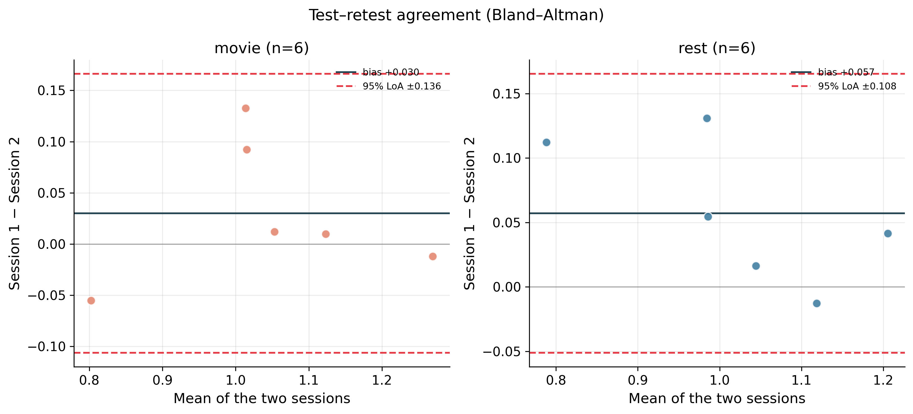

Recordings processed: 24. This is a measurement-validation report: how reliably and consistently the Xon headset measures the aperiodic exponent — across a person's repeat sessions, across a quiet vs noisy condition, by scalp region, and with how few minutes of clean data. Important: without a simultaneous research-grade reference recording, this assesses reliability and consistency, not absolute accuracy (we cannot know the "true" exponent to compare against). See Limitations at the end.
🖼 Open the diagnostics gallery — every recording on one page →
Distribution of the exponent, fit r², and how much clean data survived QC, overall and by condition.
| group | metric | n | mean | sd | median | iqr | min | max |
|---|---|---|---|---|---|---|---|---|
| all | aperiodic exponent | 24 | 1.0336 | 0.1433 | 1.0511 | 0.1642 | 0.7321 | 1.2752 |
| all | fit r^2 | 24 | 0.9919 | 0.0022 | 0.9923 | 0.0028 | 0.9851 | 0.9950 |
| all | % epochs kept | 24 | 88.2329 | 8.1116 | 90.4500 | 2.1375 | 61.3100 | 94.4700 |
| all | clean minutes | 24 | 2.9264 | 0.2691 | 3.0000 | 0.0708 | 2.0333 | 3.1333 |
| all | across-channel SD | 24 | 0.0337 | 0.0070 | 0.0354 | 0.0118 | 0.0216 | 0.0438 |
| movie | aperiodic exponent | 12 | 1.0461 | 0.1504 | 1.0603 | 0.1571 | 0.7750 | 1.2752 |
| movie | fit r^2 | 12 | 0.9921 | 0.0027 | 0.9930 | 0.0024 | 0.9851 | 0.9950 |
| movie | % epochs kept | 12 | 88.4000 | 7.5136 | 90.7000 | 1.0100 | 66.3300 | 93.9700 |
| movie | clean minutes | 12 | 2.9319 | 0.2492 | 3.0084 | 0.0333 | 2.2000 | 3.1167 |
| movie | across-channel SD | 12 | 0.0348 | 0.0070 | 0.0360 | 0.0067 | 0.0225 | 0.0438 |
| rest | aperiodic exponent | 12 | 1.0211 | 0.1412 | 1.0430 | 0.1667 | 0.7321 | 1.2263 |
| rest | fit r^2 | 12 | 0.9917 | 0.0018 | 0.9920 | 0.0023 | 0.9880 | 0.9939 |
| rest | % epochs kept | 12 | 88.0658 | 9.0035 | 89.9500 | 3.8975 | 61.3100 | 94.4700 |
| rest | clean minutes | 12 | 2.9208 | 0.2987 | 2.9833 | 0.1292 | 2.0333 | 3.1333 |
| rest | across-channel SD | 12 | 0.0326 | 0.0072 | 0.0327 | 0.0116 | 0.0216 | 0.0425 |
ICC(2,1) is the standard test-retest statistic (>0.75 good, >0.9 excellent), with a bootstrap 95% CI. At this sample size the CIs are wide, so read them, not just the point estimate. The scatter (identity line) and the Bland-Altman plot (bias & 95% limits of agreement) show the agreement directly.
| condition | n_participants_complete | n_sessions | ICC(2,1) | ICC_95CI_low | ICC_95CI_high | pearson_r | pearson_p | mean_abs_session_diff | note |
|---|---|---|---|---|---|---|---|---|---|
| movie | 6 | 2 | 0.9001 | 0.195 | 0.990 | 0.9025 | 0.0138 | 0.0523 | excellent reliability |
| rest | 6 | 2 | 0.8701 | 0.380 | 0.942 | 0.9573 | 0.0027 | 0.0613 | good reliability |


Two distinct questions, both of interest here:
(a) Does the exponent itself differ between the two states? This is a real question — the aperiodic exponent indexes excitation/inhibition balance, which can genuinely shift between quiet rest and watching a movie, so a difference would be scientifically meaningful. Paired within-participant contrast, with a 95% CI on the difference and Cohen's dz. At this sample size it is underpowered, so read the confidence interval and treat a non-significant result as "inconclusive," not "no difference."
| quiet | rest |
| noisy | movie |
| n_pairs | 12 |
| quiet_mean | 1.0211 |
| noisy_mean | 1.0461 |
| mean_diff_noisy_minus_quiet | 0.0251 |
| cohen_dz | 0.4035 |
| diff_95ci_low | -0.0144 |
| diff_95ci_high | 0.0645 |
| paired_t | 1.3977 |
| paired_t_p | 0.1898 |
| wilcoxon_p | 0.2036 |


(b) Is the measurement robust to the noisy condition? Separately from the value, test-retest reliability and clean-data yield are better in rest than movie (section 2) — the headset still works during the movie but with lower reliability and more rejected data.
Computed at the participant level (one value per person, averaged over their recordings) to avoid pseudoreplication — pooling all recordings would treat non-independent sessions/conditions as separate subjects and overstate significance. Omnibus Friedman test plus Holm-corrected pairwise Wilcoxon signed-rank.
Friedman (n=6 participants): χ²=4.3333, p=0.1146. Means: frontal 1.0362, central 1.039, parietal 1.0234.
| pair | mean diff | p (raw) | p (Holm) | |
|---|---|---|---|---|
| frontal vs central | -0.0027 | 0.8438 | 0.8438 | ns |
| frontal vs parietal | +0.0129 | 0.2188 | 0.4375 | ns |
| central vs parietal | +0.0156 | 0.0312 | 0.0938 | ns |

Caveat: with 7 channels and the device ear (A2) reference, regional differences are partly reference-dependent; treat the spatial pattern as suggestive and confirm against a reference-robust montage before interpreting it as physiology.
We estimate the exponent using increasing amounts of clean data and ask how reliable it becomes. Two standard measures: split-half internal consistency (odd vs even epochs, Spearman-Brown corrected; target ≥ 0.9) and between-session test-retest ICC (session 1 vs session 2; target ≥ 0.75 = "good"). The shortest recording length that reaches each target is the evidence-based answer to how few minutes are needed.
Reading this: look at the left of the curve. The estimate is only shown where enough recordings contribute; at longer lengths only a few recordings are that long (and test-retest needs a matched pair of sessions), so the sample collapses and any dip there is noise, not a real loss of reliability.
| split_half_target | 0.9 |
| icc_target | 0.75 |
| min_n | 8 |
| minutes_for_split_half | 1.0 |
| minutes_for_good_icc | 1.0 |
| max_split_half | 0.9808 |
| max_icc | 0.9403 |
| max_trustworthy_minutes | 3.0 |
| n_recordings | 24 |


Each recording's duration-curve plot (in per_recording/) marks two different "how much is enough" points, and the distinction matters:
minutes_to_stabilize): where the two independent halves
(odd vs even epochs) agree — the estimate is repeatable. Usually reached quickly.minutes_to_converge): where the running estimate
stops drifting toward the full-length value. This is often much later — short
recordings can give a precise but biased (typically too low) exponent that keeps
rising as more data is added.Why both matter: a few minutes may give a reliable exponent, but not the same value a long recording would — the short estimate can be systematically low. For comparing people this bias may partly cancel if it is consistent; for absolute values it does not. Worth confirming with the fixed vs knee fit and against a longer reference.
| n_recordings | 24 |
| n_stabilized | 24 |
| pct_stabilized | 100.0 |
| precise_minutes_median | 1.0 |
| precise_minutes_iqr | 0.0 |
| precise_minutes_min | 1.0 |
| precise_minutes_max | 2.0 |
| reach_full_value_minutes_median | 1.0 |
| reach_full_value_minutes_iqr | 0.0 |
| reach_full_value_minutes_min | 1.0 |
| reach_full_value_minutes_max | 1.0 |
Method grounded in the aperiodic-reliability literature (McKeown et al. 2024, Cerebral Cortex; epoch-increment split-half reliability as in EEG power-spectrum reliability work). The full curve is in stats_reliability_by_duration.csv.
See gallery.html for a one-page contact sheet of every recording's diagnostic figure. Granular per-recording outputs are in per_recording/, figures in figures/, statistics in statistics/.
Spectral parameterization (aperiodic exponent & offset) via the FOOOF/specparam method:
Donoghue et al. 2020, Parameterizing neural power spectra into periodic and
aperiodic components, Nature Neuroscience 23:1655–1665.
Acquisition & artifact-rejection parameters (0.1 Hz high-pass, 1 s / 100 ms
epochs, amplitude >100 µV or gradient >10 µV/ms rejection, ear/A2
reference) follow the Xon validation work of the Boere & Krigolson lab
(Boere et al. 2025, Sci Rep; Boere, Copithorne & Krigolson 2025, Exp Brain Res);
the gradient criterion reproduces Krigolson's published artifact-rejection routine.
Reliability-vs-recording-length analysis (split-half internal consistency; between-session
test–retest ICC) follows McKeown et al. 2024, Test–retest reliability of
spectral parameterization by 1/f characterization using SpecParam, Cerebral Cortex
34:bhad482, and the epoch-increment reliability approach used in EEG power-spectrum
reliability studies. EMG contamination of high-frequency EEG: Whitham et al. 2007;
Muthukumaraswamy 2013. Preprocessing implemented with MNE-Python
(Gramfort et al. 2013). Full details in docs/METHODS.md.